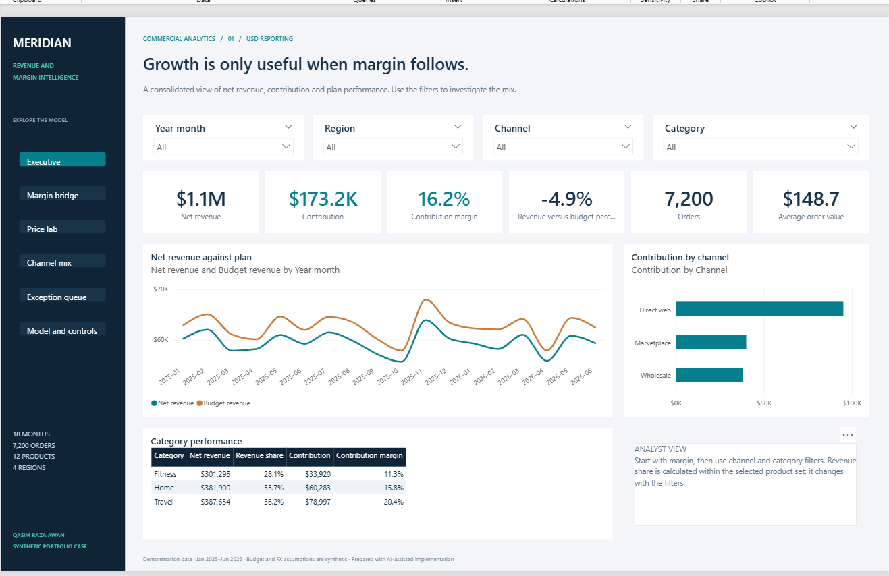
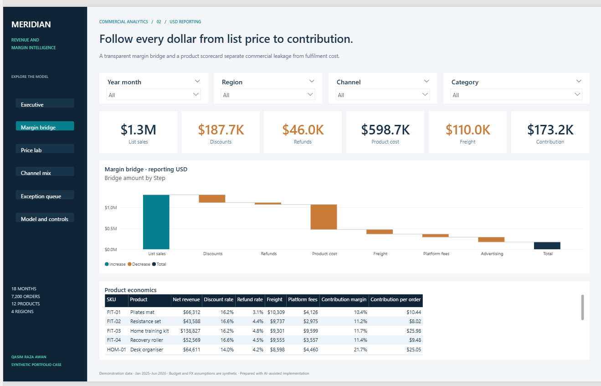
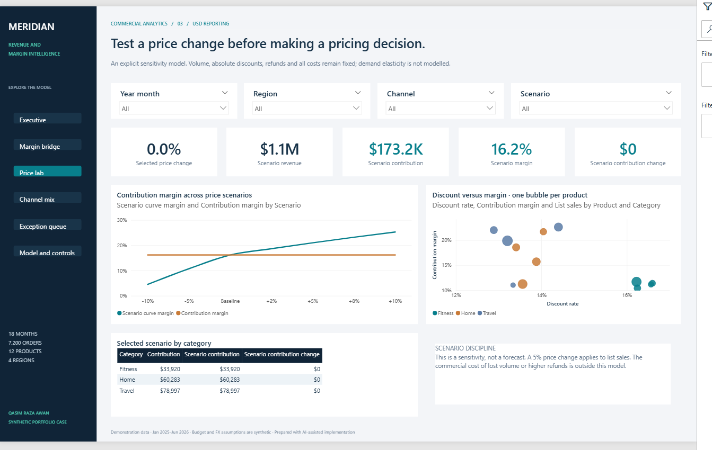
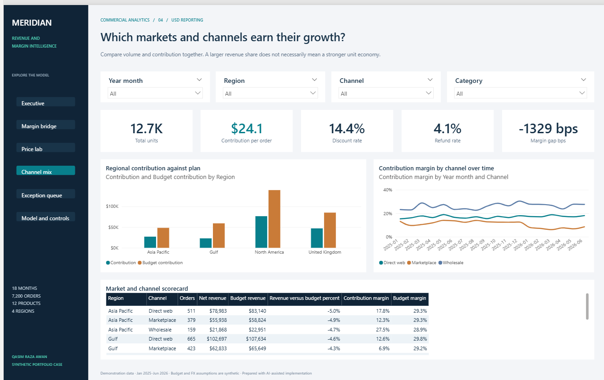
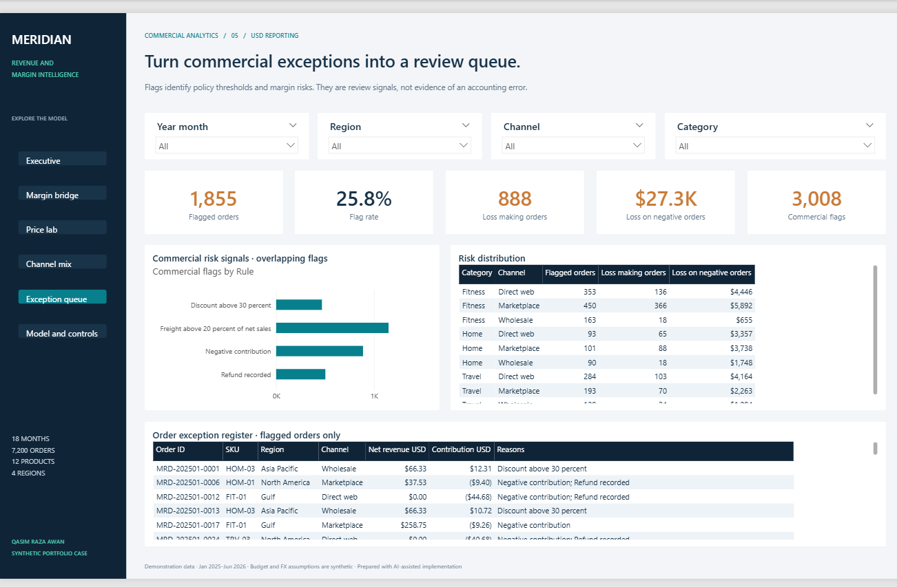
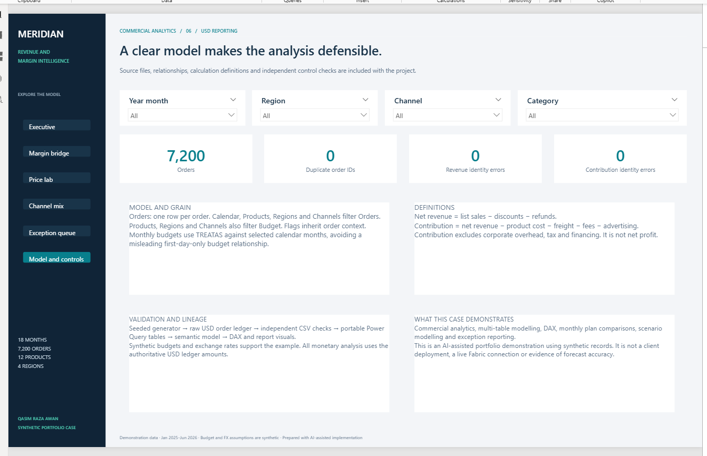
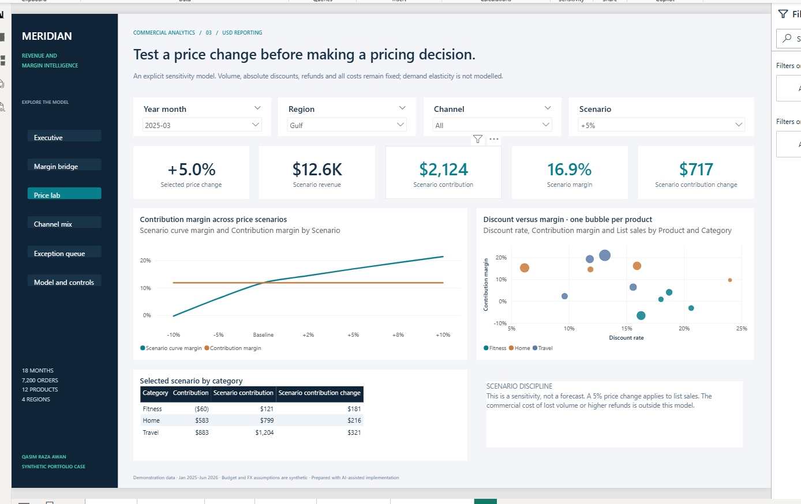

Is growth earning its keep?
Revenue, contribution, margin, average order value and performance against plan.
Meridian · Fictional business · Native Power BI
A commercial analytics case that connects product, region and channel performance to the discounts, refunds and variable costs behind contribution.
Download the Power BI projectExplore the casePower BI Desktop screenshots







The analytical challenge
In this fictional consumer-products business, strong sales can conceal weak contribution. Discounts, returns, marketplace fees, freight and advertising affect products and channels differently. A single revenue chart cannot explain the trade-off.
The case separates list sales from net revenue, then follows every variable cost to contribution. Shared dimensions make product, region and channel filters consistent across actuals and monthly budgets. An order-level queue preserves the evidence behind commercial risk signals.
Inside the native report
Revenue, contribution, margin, average order value and performance against plan.
A waterfall from list sales through discounts, refunds, product cost, freight, fees and advertising.
A constrained sensitivity with a separate scenario curve and a product-level discount versus margin scatter.
Regional contribution against plan and channel margin trends, supported by a comparable scorecard.
Negative contribution, refunds, high discounting and freight burden, with overlapping flags kept distinct.
Ledger identities, unique order IDs, model grain, calculation definitions and source lineage.
Technical decisions
Ten tables and eight relationships separate dimensions from order facts, monthly product-level targets and commercial flags. DAX applies selected calendar months to budget month keys, avoiding a misleading relationship through only the first day of each month.
Contribution deducts product cost, freight, fees and advertising from net revenue. Corporate overhead, financing and tax are excluded. It is not presented as net profit.
Price changes apply to list sales while volume, absolute discounts, refunds and costs remain fixed. A separate disconnected axis keeps the sensitivity curve visible when a scenario is selected. This is a sensitivity, not an elasticity forecast.
Independent Python checks reconcile exported source records, validate keys and flags, test the baseline scenario and check budget coverage. The model includes 44 DAX measures and a portable synthetic dataset.
Interpretation of the sample
The generated sample contains USD 1,070,849.22 of net revenue and USD 173,198.92 of contribution. Its 1,855 flagged orders generate 3,008 overlapping commercial signals. These are sample outputs, not Qasim's business achievements.
The demonstration includes pressure on marketplace fitness products from deeper discounts and variable costs. The report is designed to let a reviewer inspect that mix rather than accepting a headline number without its supporting records.
Prepared for Qasim's portfolio with AI-assisted implementation. Meridian, its transactions, budgets and exchange rates are synthetic. This is a native report project, not a live embedded report or an employer/client deployment. Desktop screenshots confirm all six pages render, the control cards show zero errors, and month, region and +5% scenario selections update the analysis. These checks cover the demonstrated views, not every possible interaction.
The ZIP contains the native PBIP project, embedded Power Query data, DAX definitions, CSV ledger, reproducible generator, independent checks and opening instructions. Extract it, open Meridian_Revenue_Margin.pbip and select Home → Refresh. In Desktop editing mode, use Ctrl + click for the navigation buttons.
Download the full project